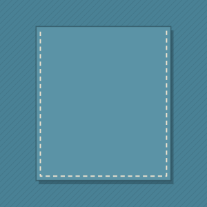
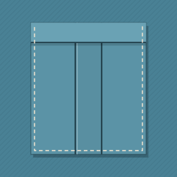

Patch and welt pockets
Choose your model, from the simplest to the most elaborate. Patch pockets are sewn onto the garment: they are the gusset pockets of safari jackets and cargo trousers. The welt pocket is sewn into a slit: only the opening shows. All can be sewn onto an existing garment.
Patch pockets
The menus of the basic options are the same for all models: dimensions, bottom shape, fold-back allowance, cuff facing, flap and seam allowance. The pocket opening can be straight or slanted (bevelled).

Simple pocket
No gusset: the quickest to make.
Difficulty●○○○
Create the pattern

Side gussets
Two pleats on the sides to make the pocket roomier. Standard or one-piece.
Difficulty●●○○
Create the pattern

Centre pleat
One pleat in the middle of the front, outside or inside, with an added cuff facing.
Difficulty●●○○
Create the pattern

Double gusset
Side gussets and a centre pleat together, standard or applied.
Difficulty●●●○
Create the pattern
Welt pocket
Which pocket to choose? A guide to names and uses
Find the pocket that suits your garment, or look it up by the name you know it by
| What you are looking for | Our pattern |
|---|---|
| patch pocket, applied pocket, shirt pocket, chest pocket, apron pocket, jeans back pocket | Simple pocket |
| cargo pocket, military pocket, combat pocket, utility pocket, workwear pocket, gusset pocket, bellows pocket, 3D pocket | Side gusset pocket |
| pleated pocket, box pleat pocket, centre pleat pocket, safari pocket | Centre gusset pocket |
| gusset and pleat pocket, pleated cargo pocket, field jacket pocket | Double gusset pocket |
| flap pocket, pocket flap, buttoned pocket | Flaps (patch pockets) · Welt pocket, single welt with flap |
| welt pocket, double welt pocket, jetted pocket, piped pocket, besom pocket, suit pocket, jacket pocket, jacket inside pocket | Welt pocket |
| single welt pocket, one-lip pocket, welted chest pocket | Welt pocket, single welt |
| slit pocket, faced slit pocket | Welt pocket, slit pocket |
| vertical pocket, angled pocket, slanted pocket | Welt pocket (adjustable angle) · slanted opening of the patch pockets |
| sleeve pocket, arm pocket | Simple pocket, centre gusset pocket |
| What you are sewing | Suitable pockets |
|---|---|
| Shirt, blouse, overshirt | simple pocket, centre gusset pocket |
| Jacket, bomber, safari jacket, work jacket | side gusset pocket, double gusset pocket, centre gusset pocket with flap, welt pocket (double, single, single with flap) |
| Suit jacket, blazer | welt pocket: double welt, single welt (chest), single welt with flap or slit pocket with flap (lower pockets) |
| Coat, parka | side gusset pocket, double gusset pocket, angled or vertical welt pocket |
| Inside of a lined jacket or coat | welt pocket, double welt |
| Trousers, Bermuda shorts, shorts (thigh, cargo) | side gusset pocket, double gusset pocket |
| Trousers, skirt (back) | simple pocket, welt pocket (double or single), slit pocket |
| Dress, skirt, apron | simple pocket, welt pocket, slit pocket |
| Bag, tote, pouch | simple pocket, side gusset pocket, slit pocket (inside pocket) |
| Children’s clothing | simple pocket, in small sizes |
| Sleeve | simple pocket, centre gusset pocket |